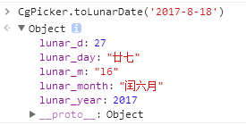
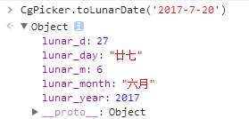
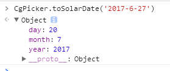
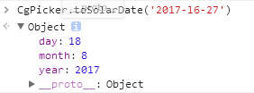

当前插件默认可选择阳历跟阴历，主要用于一些需要通过农历来选择日期的地方。但是也支持只选择阳历，通过配置项可以实现多种自由组合。
var myPick01 = new CgPicker();
myPick01.init({
trigger: "#input01",
type: "solar",
needTime: false,
fadeClose: true,
});
var myPick02 = new CgPicker();
myPick02.init({
trigger: "#input02",
type: "lunar",
needTime: true,
fadeClose: true,
});
var myPick03 = new CgPicker();
myPick03.init({
trigger: "#input03",
type: "lunar",
needTime: false,
fadeClose: true,
});
| 参数 | 说明 | 类型 | 可选值 | 默认值 |
|---|---|---|---|---|
| trigger |
用于激活插件的input框对应的ID值，注意要带‘#’号, 例如： '#inputId' |
String | - | - |
| type | 插件类型 | String |
阴历（农历）：lunar 阳历（公历）：solar |
lunar |
| needType | 是否可选择时间 | Boolean |
可选时间：true 不选时间：false |
true |
| fadeColse | 是否支持点击庶罩层关闭插件 | Boolean |
可关闭：true 不关闭：false |
true |
根据自己的配置，在选择时间后会在对应的input元素中生成对应的值，通过脚本我们可获取当前选择的时间。
| 属性 | 说明 |
|---|---|
| data-solar | （公历）阳历日期 |
| data-lunar | （农历）阴历日期 |
| data-solar | 当前时辰 |
// 我们以input02为例子，可以获取阳历，阴历，时辰
// 获取阴历日期
document.querySelector("#input02").dataset.lunar;
// 获取阳历日期
document.querySelector("#input02").dataset.soloar;
// 获取时辰
document.querySelector("#input02").dataset.time;
| 函数名 | 说明 | 参数类型 | 参数示例 | 返回值 |
|---|---|---|---|---|
| CgPicker.toLunarDate | 将阳历转为阴历 | String | '2017-8-9' | |
| CgPicker.toSolarDate | 将阴历转为阳历 | String |
'2017-6-27' '2017-l6-27'（注意阴历闰月，在对应的月份前面加上字母'l'） |
// 将阳历'2017-8-18'转换为阴历'2017年闰6月27日'
CgPicker.toLunarDate('2017-8-9');

// 将阳历'2017-7-20'转换为阴历'2017年6月27日'
CgPicker.toLunarDate('2017-7-20');

// 将农历'2017年6月27日'转换为阳历'2017-7-20'
CgPicker.toSolarDate('2017-6-27');

// 将农历'2017年闰6月27日'转换为阳历'2017-8-18'
CgPicker.toSolarDate('2017-l6-27');
